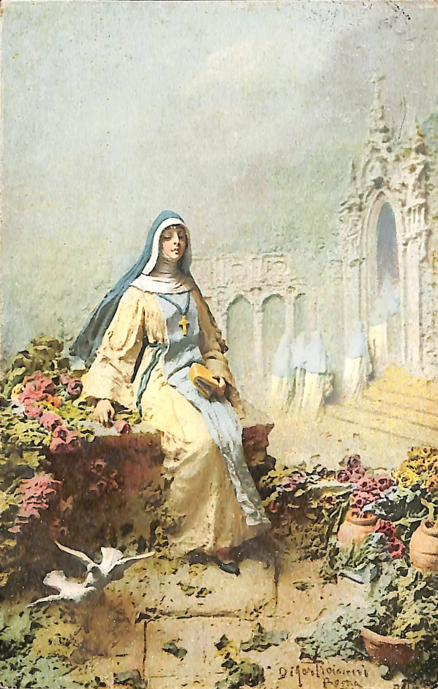
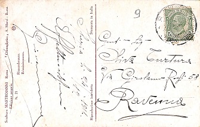
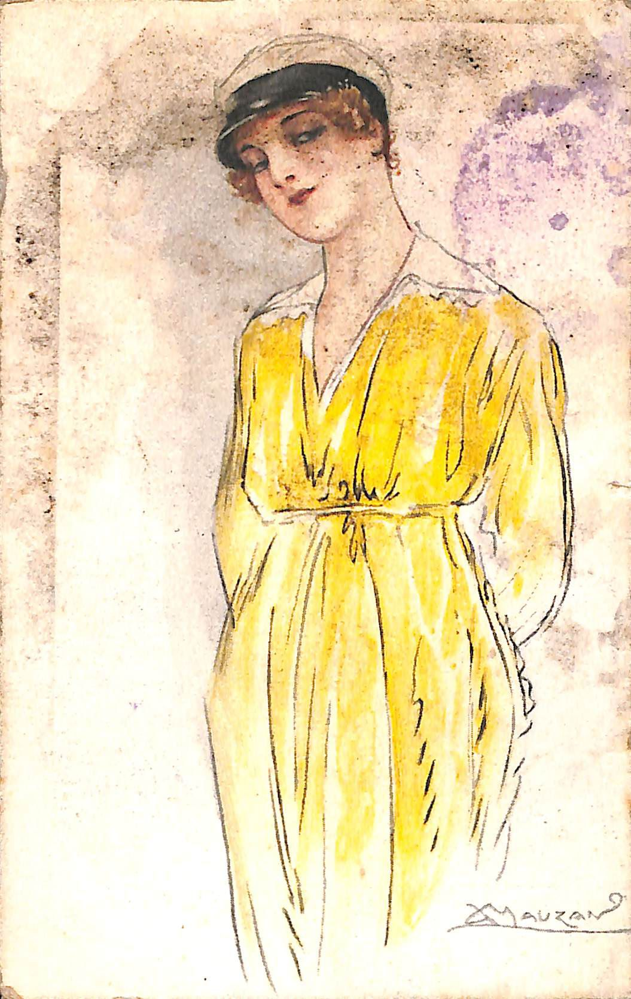
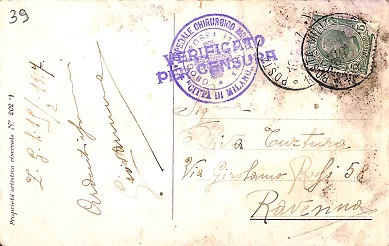
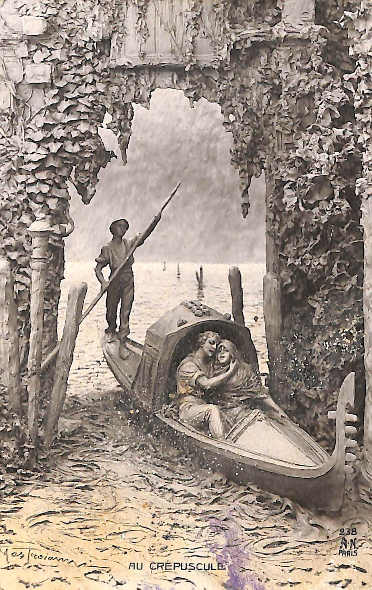
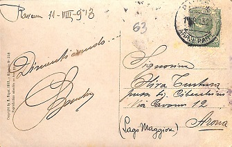

Scegli una delle cartoline ricevute da Oliva Tortona per visualizzarne ulteriori informazioni
Passa il mouse sopra la cartolina per evidenziare l'elemento rispettivo nella tabella di fianco
Rimembranze
| Descrizione |
| Monaca seduta con una rosa in mano e due colombe in primo piano. In basso a destra si legge la firma "D. Mastroianni Roma" |
| Autore |
| Domenico Mastroianni |
| Casa editrice |
| "Cromogliptica" A. Marzi, Roma |
| Mittente |
| Giovanni Coliola |
| Destinatario |
| Oliva Tortura |
| Segni particolari |
| Nella doppia s, la seconda viene rappresentata da una s lunga |
| Luogo e data |
| Spezia 24/12/1916 |
| Messaggio |
| Affettuosissimi Giovanni |
| Numero cartolina |
| 9 |
| Stampe |
| Sculture Mastroianni Roma Edizione propria n° 21 |
| "Cromogliptica" A. Marzi - Roma |
| "Rimembranze" Reminescences |
| Riproduzione interdetta |
| Stampata in Italia |
| Timbri e francobolli |
| Scritture illeggibili |
| Francobollo da 5 centesimi del Regno d'Italia |
| Destinazione |
| Gentile Signora |
| Oliva Turtura |
| Via Girolamo Rossi 58 |
| Ravenna |
Donna in giallo in posa
| Descrizione |
| Donna con vestito giallo e cappello in posa |
| Autore |
| Achille Luciano Mauzan |
| Mittente |
| Giovanni Coliola |
| Destinatario |
| Oliva Tortura |
| Segni particolari |
| Nella doppia s, la seconda viene rappresentata da una s lunga |
| Luogo e data |
| Z. G., 19/02/1916 |
| Messaggio |
| Ardentissimi Giovannino |
| Numero cartolina |
| 39 |
| Stampe |
| Proprietà artistica riservata N° 202-1 |
| Timbri e francobolli |
| VERIFICATO PER CENSURA - Ospedale Chirurgico Mobile "Città di Milano" - Croce Rossa Italiana |
| Francobollo da 5 centesimi del Regno d'Italia |
| Destinazione |
| Signorina |
| Oliva Turtura |
| Via Girolamo Rossi 58 |
| Ravenna |
Au Crepuscole
| Descrizione |
| Coppia di innamorati in gondola con gondoliere |
| Autore |
| Domenico Mastroianni |
| Casa editrice |
| A. Noyer, Paris |
| Mittente |
| Banchi |
| Destinatario |
| Oliva Tortura |
| Luogo e data |
| Ravenna 11-VII-'913 |
| Messaggio |
| Dimenticando... Banchi |
| Numero cartolina |
| 63 |
| Stampe |
| “Copyright by A. Noyer 1912 – Allegorie n° 288 |
| Reproduction interdite tous pays” |
| Timbri e francobolli |
| Francobollo da 5 centesimi del Regno d'Italia |
| Destinazione |
| Signorina |
| Olivia Turtura |
| presso sig. Cibecchini Via Cavour 12 |
| (Lago Maggiore) Arona |